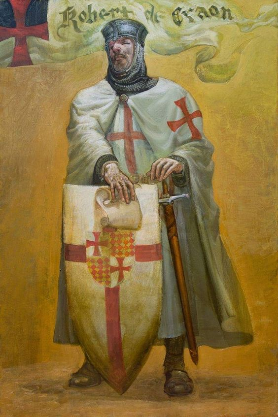
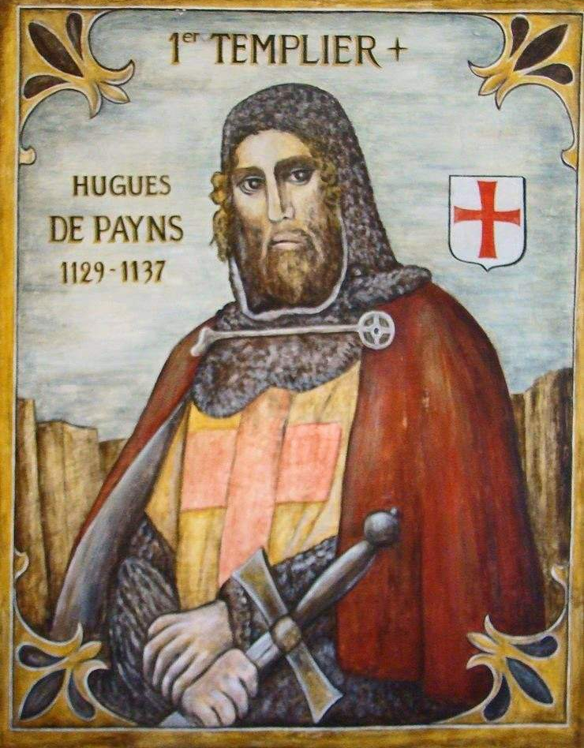
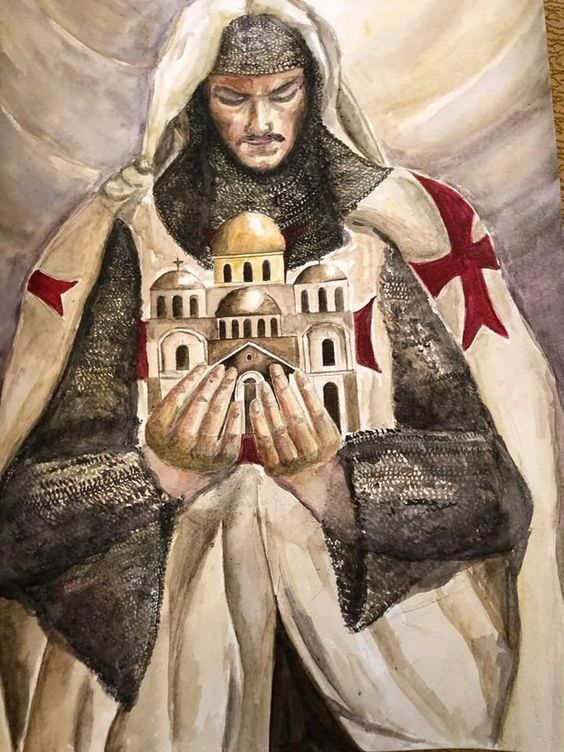
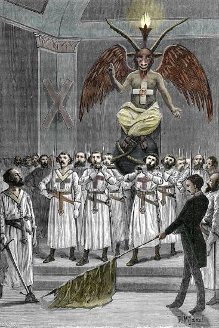
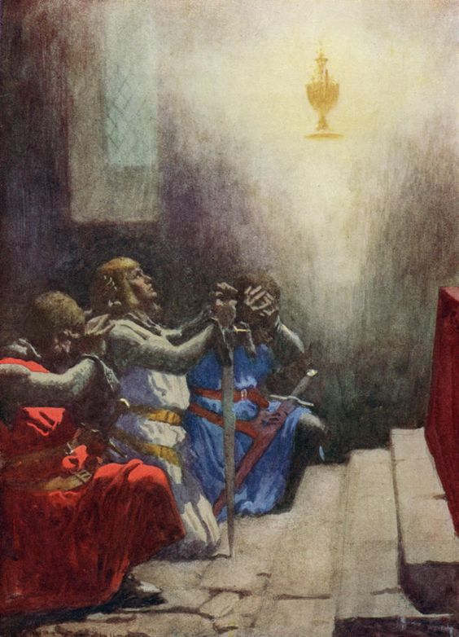
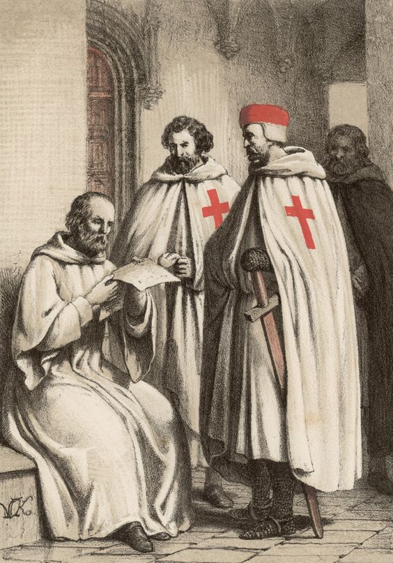
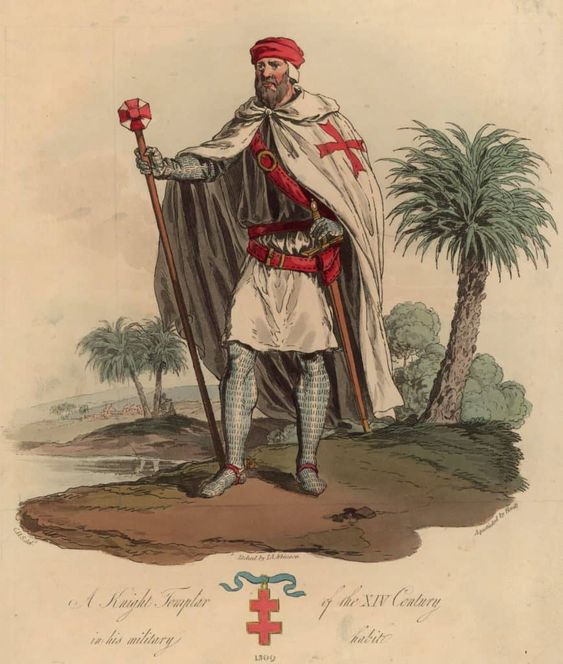
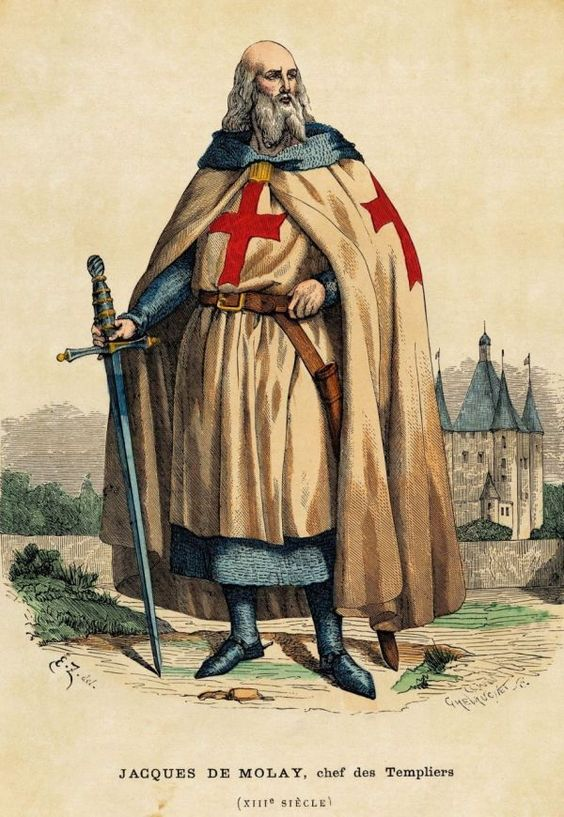
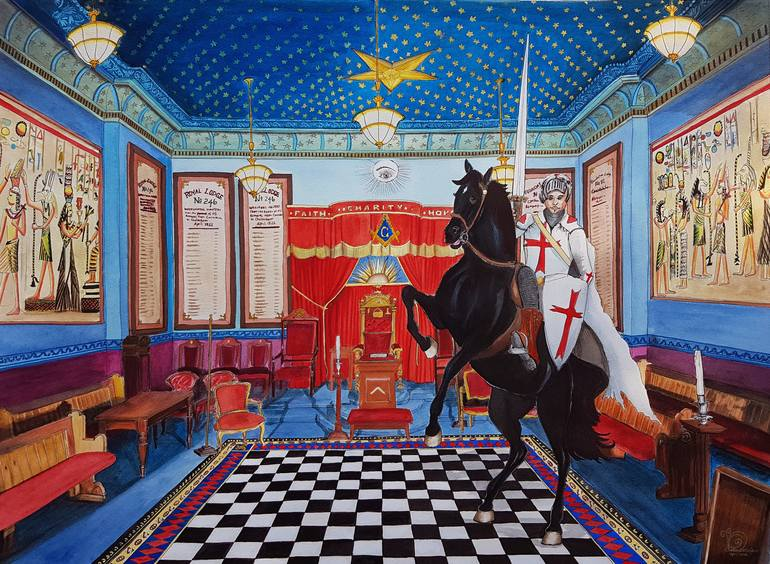
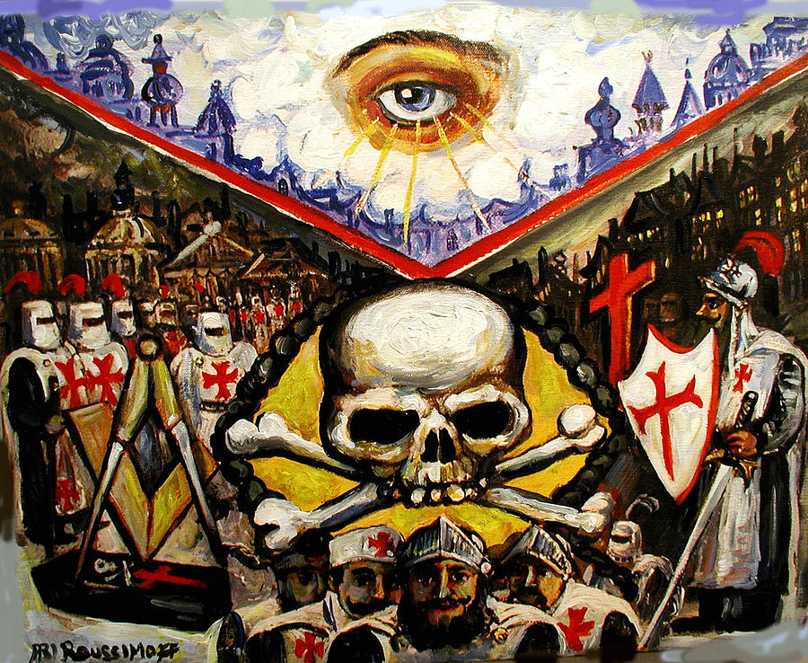

O Enigma dos Cavaleiros Templários
Prefácio
Os Cavaleiros Templários, oficialmente conhecidos como a Ordem dos Pobres Cavaleiros de Cristo e do Templo de Salomão, são uma das ordens militares mais enigmáticas e lendárias da Idade Média. Fundados no início do século XII, os Templários se tornaram uma das ordens mais poderosas e ricas do mundo cristão medieval. Sua história está entrelaçada com mistérios, teorias de conspiração, e uma aura de segredo que continua a fascinar pessoas até os dias de hoje.
Origem e Missão
A Ordem dos Cavaleiros Templários foi fundada em 1119 por um grupo de nove cavaleiros franceses liderados por Hugo de Payens. Inicialmente, seu objetivo era proteger os peregrinos cristãos que viajavam à Terra Santa, especialmente em Jerusalém, que havia sido recentemente capturada pelos cruzados. Os Templários receberam esse nome porque foram alojados no local onde se acreditava estar o Templo de Salomão, daí o nome "Templários".
Crescimento e Poder
Ao longo dos séculos XII e XIII, os Templários se tornaram uma força militar formidável e acumulavam vastas riquezas. Eles eram reconhecidos por sua disciplina militar e bravura em batalha, desempenhando papéis cruciais nas Cruzadas. Além disso, os Templários desenvolveram uma rede de fortificações e castelos, que não apenas garantiam sua segurança, mas também serviam como pontos estratégicos de defesa.
Além do poder militar, os Templários também se tornaram uma das primeiras instituições bancárias internacionais. Eles ofereciam serviços financeiros, como a custódia de dinheiro e a emissão de "letras de crédito" para os peregrinos, que podiam depositar dinheiro em uma preceptoria na Europa e retirá-lo na Terra Santa.
O Misticismo e o Segredo
Ao longo do tempo, os Templários acumularam não apenas riqueza, mas também um certo misticismo. Existem diversas lendas e teorias que cercam a ordem, incluindo a busca pelo Santo Graal, a Arca da Aliança, e o envolvimento com antigos segredos esotéricos e alquimia. Essas associações são em grande parte especulativas e foram popularizadas por séculos de literatura, lendas e, mais recentemente, pela cultura popular.
• O Santo Graal: Uma das lendas mais persistentes é que os Templários teriam encontrado e protegido o Santo Graal, o cálice usado por Jesus na Última Ceia. Este objeto sagrado, segundo a lenda, teria poderes miraculosos e poderia conceder imortalidade.
• A Arca da Aliança: Outra teoria sugere que os Templários estariam na posse da Arca da Aliança, um dos artefatos mais sagrados do Antigo Testamento, que continha as Tábuas da Lei recebidas por Moisés no Monte Sinai.
• O Segredo dos Templários: Alguns estudiosos acreditam que os Templários possuíam conhecimento secreto, possivelmente relacionado à Cabala, à Maçonaria, ou a antigas religiões misteriosas. Este segredo teria sido a fonte de seu poder e riqueza, e poderia explicar por que foram perseguidos de forma tão implacável.
A Queda dos Templários
O crescente poder e riqueza dos Templários começaram a gerar inveja e desconfiança entre as monarquias europeias, especialmente na França. O rei Filipe IV da França, profundamente endividado com os Templários, conspirou para destruir a ordem. Em 13 de outubro de 1307 (uma sexta-feira 13), Filipe ordenou a prisão em massa dos Templários na França. Eles foram acusados de heresia, blasfêmia, idolatria e vários outros crimes.
Muitos Templários foram torturados e forçados a confessar esses crimes, embora a maioria dessas confissões tenha sido obtida sob coerção. Em 1312, o Papa Clemente V, sob pressão de Filipe, dissolveu oficialmente a ordem. Jacques de Molay, o último Grão-Mestre dos Templários, foi queimado na fogueira em 1314, selando o destino da ordem.
O Legado e o Mistério Duradouro
Embora a ordem tenha sido dissolvida, o legado dos Templários continuou a viver. Sua história tornou-se a base para inúmeras lendas e teorias de conspiração. Na Maçonaria, por exemplo, algumas tradições alegam uma conexão direta com os Templários, preservando seus segredos e ensinamentos.
Os Cavaleiros Templários também se tornaram figuras centrais na literatura e na cultura popular, sendo retratados em livros, filmes e jogos, muitas vezes como guardiões de segredos antigos ou como heróis trágicos.
Reflexão
Os Cavaleiros Templários continuam a ser um dos grupos mais fascinantes e misteriosos da história medieval. Sua ascensão ao poder, seu papel nas Cruzadas, e sua queda dramática deixaram uma marca indelével na história e na cultura. Mesmo séculos após sua dissolução, os Templários permanecem envoltos em um manto de mistério, com suas lendas e segredos ainda intrigando estudiosos.